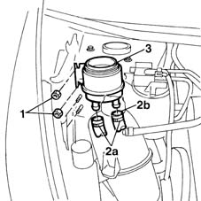

4130B10 power steering fluid resevoir r r
- Path
- Procedures > 41 STEERING > 4130 POWER ASSISTED STEERING > 4130B power steering hydraulic sytem > 4130B10 power steering fluid resevoir r r
- Kind
- repair procedure (removal / refitting; the operation number is the code)
- Applies to
- all engines; all production periods
- Interactive page
- https://sloeber94.github.io/elrnDB-fMltpl/en/#/2891689
Applies to: all engines; all production periods
 Removing
Removing
 Refitting
RefittingOpen the bonnet lid.
Using a syringe, drain the fluid from the power assisted steering fluid reservoir.
1. Undo the nut fixing the reservoir to the bodyshell.
2. Cut the two bands (2a) and disconnect the fluid pipes (2b) for the power assisted steering box.
3. Remove the reservoir from its housing.

Applies to: all engines; all production periods
Refitting
RemovingConnect the two fluid pipes to the power assisted steering fluid reservoir, fixing them using new bands.
Tighten the bolts fixing the reservoir to the bracket.
4130B14 Power assisted steering fluid reservoir CAP - R.R. - Check level and top up if necessary.